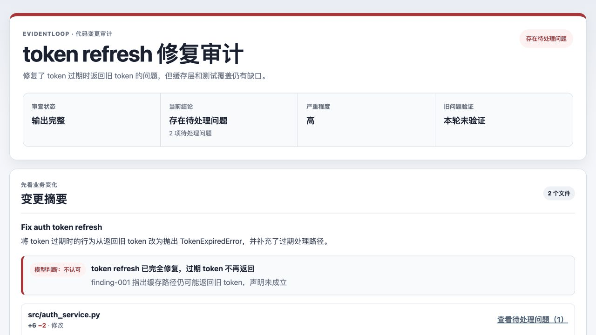
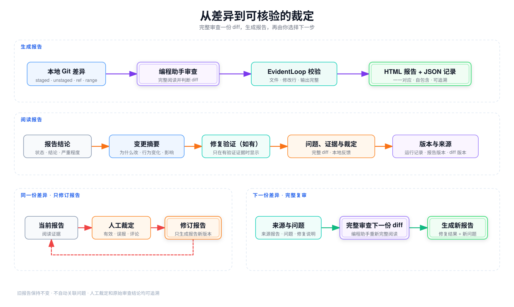

交互演示与真实证据
先看报告怎么用，再核验真实结果
短动画展示如何从问题进入完整 diff，并在浏览器里记录裁定和评论。

真实审计证据：查看覆盖 43/43 个文件的自审报告及其校验 JSON。结果为 complete / pass_candidate、0 findings。
一条可追溯链路
让每次裁定都能回到证据
首次审查、人工裁定和后续修复验证含义不同。EvidentLoop 会把这些边界清楚保留下来。

-
完整审查一份 diff
编程助手负责判断；EvidentLoop 校验文件身份、修改行锚点和输出完整性，并生成 HTML 报告及对应 JSON 记录。
-
修订报告，不改代码
人工裁定只更新报告链路，不再次调用模型，也不修改业务文件。
-
显式验证后续 diff
由来源报告、明确选择的问题和修复声明发起新一轮完整 diff 审查；系统不会猜测关联。
旧报告保持不变；代码行或 finding 消失，不能自动当作已经修复的证据。
从本地开始
在需要审计的仓库里直接运行
EvidentLoop 使用编程助手已经提供的模型；它不会执行 diff 或模型输出中的命令。
安装 CLI 与 Skill
# 先体验内置离线 demo
uvx evidentloop demo
# 安装并执行真实审计
uv tool install evidentloop
npx skills@latest add evidentloop/evidentloop --skill evidentloop -g
evidentloop doctor然后对编程助手说：用 EvidentLoop 审计我的 staged changes，并生成 HTML 报告。
两个常见问题
审计报告可以分享吗？
可以。HTML 是自包含文件，适合静态托管；分享前请先脱敏，浏览器里的本地裁定不会自动上传。
提交反馈会重新审查或修改代码吗？
不会自动触发。提交同一份 diff 的反馈只会修订报告；只有你明确要求修改代码或验证后续 diff 时，编程助手才会另行执行。